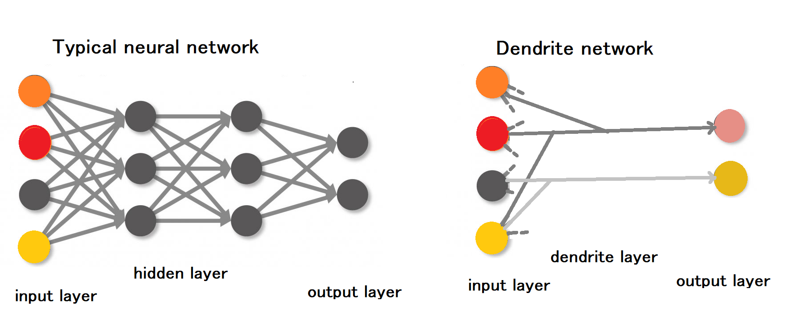
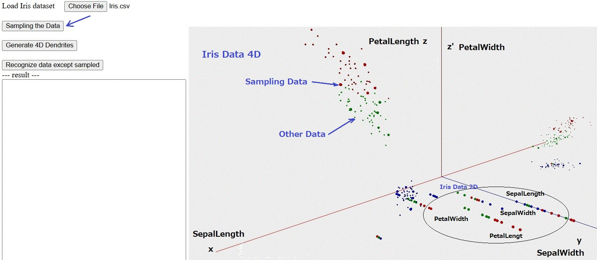
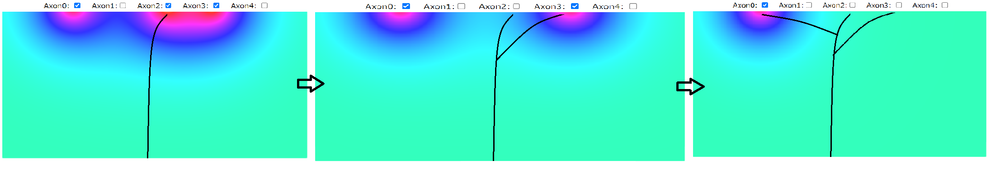

Generating 4D Dendrite Network program
GDN4D for Iris Dataset
In deep learning, the hidden layers rely fundamentally on "one-to-many" mappings for both input processing and learning. Because the weight space generated through backpropagation is probabilistic, the process not only requires a vast number of parameters and massive amounts of data, but also yields unpredictable results.
Biological neural networks are formed through many-to-one mappings; they lack a mechanism equivalent to backpropagation and do not require vast amounts of training data.
Information is also stored within the physical structure of dendrites, which branch out much like the limbs of a tree. Learning involves not only changes in the strength of synaptic connections, but also the formation of new branches and the pruning of existing ones.

We extended the hypothesis—that a certain type of "spatial field" originating from axon terminals induces the formation and activation of dendrites—into four dimensions, and tested it using the "Iris dataset," which is the most fundamental and small-scale dataset.
This program (GDN4D) maps the four measurements from the Iris dataset as points in a 4D space. GDN4D plots all the data—consisting of 50 points for each of the three species—into this 4D space.
Since humans cannot perceive 4D space, the four measured variables ('SepalLength', 'SepalWidth', 'PetalLength', and 'PetalWidth') are displayed across a 3D space defined by (x, y, z) and a 3D' space defined by (-x, y, w).
GDN4D then uses five randomly selected data points from each of the three species ("setosa", "versicolor", and "virginica") as training samples within this 4D space to generate three dendritic structures. The recognition rate for the remaining 85 data points—excluding the 15 points used for training—reached approximately 95%.


The “spatial field” that attracts dendrites
Based on the following hypothesis, GDN automatically generates dendrites extending toward axon terminals.a) An activated axon terminal (Data Point) forms a kind of dendritic attraction field around itself.
b) The strength of this field follows the principle of superposition and is inversely proportional to the square of the distance.
c) First, Dendrites extend from the “growth origin” (Soma) along the potential gradient.
d) When the tip of a dendrite forms a synaptic connection with an upstream axon terminal the electric field it had been generating disappears.
e) Then, a new growth point (Node) forms on the axon—at the location where the updated field strength is highest—and elongation begins once again.
F) Even if the axon terminal is located in a 4D space, the dendrites are generated in the same way.

Iris Species Dataset and 4D-dendrite network
The Iris dataset is a classic multivariate dataset widely used in data science and machine learning.The four measurements in this dataset correspond to points in a 4D space, but they are represented as two 3D components:
(x, y, z) = [ 'SepalLength', 'SepalWidth', 'PetalLength' ] and (-x, y, z) = [ 'SepalLength', 'SepalWidth', 'PetalWidth' ].
( Alternatively, these can be viewed as points on an xy-plane, where x = 0, 1, 2, 3.)
GDN4D begins by using the axon tip (soma) as a growth point.
It extends a dendrite in the direction of the sum of the 4D vectors pointing toward five sampled data points, establishing this new position as the next growth point.
The path is stored as a sequence of coordinates for these growth points. Once a dendrite reaches a data point, the field generated by that point ceases to exist.
As the number of randomly selected learning targets decreases by one, the overall "spatial field" is altered.
At this stage, only a single dendrite exists. Next, for all coordinates stored along the current path, GDN4D calculate the sum of the vectors pointing toward the remaining data points. The point where this value is maximized becomes the origin (node) for new growth. In other words, a new "branch" will be generated from this point.
Above process is repeated until all data points become inactive, resulting in the creation of a "species neuron."
Then this dendrite-generation process is carried out for each of the three "species". setosa(represented in red), versicolor (green), and virginica (blue).
The neurons generated in this way reflect the four-dimensional data patterns specific to each "species."
Recognition and Results
Given a 4D data point to be recognized, a potential field is generated.Five dendritic terminals belonging to three cell objects calculate the sum of the "potentials" they receive and output this value as "outV."
The object among the three that yields the highest output value is taken as the recognition result.
The figure below shows the recognition results obtained when applying this method to 135 target data points (excluding those used as training samples).
 end
end